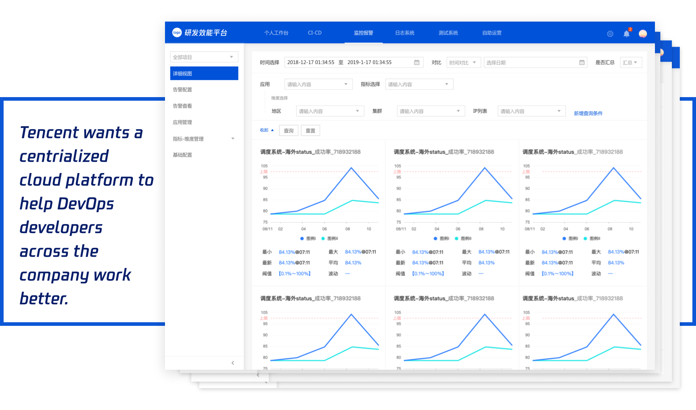
UX/UI Designer
Oct 2019 - Dec 2019
Pen & Paper, Sketch, Axure
In 3 month, following the double diamond process, with a design team with no background knowledge of DevO workflow, I successfully grasped users needs, shipped and launched part of the system as planned in roadmap 1.
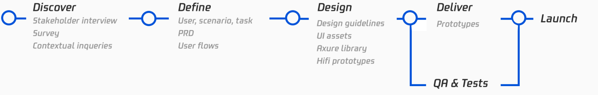
My contributions in my lovely team created great impact, marking the success of our work.
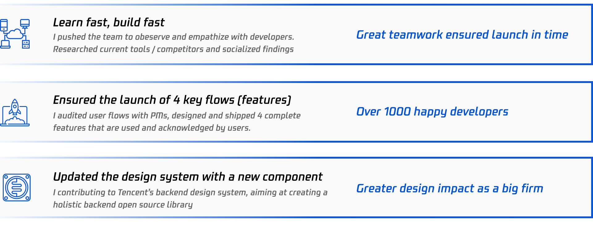
Tencent has over 10k developers in multiple teams. Different teams use/developed different tools to manage/ launch/ pack/ deploy codes in the developing process. This situation hindered the corporation not only along the DevOps streamline, but also between the same roles in different teams.
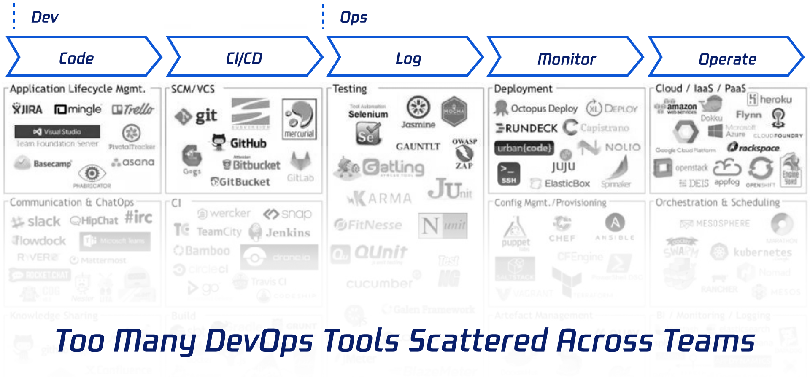
To solve the problem, Tencent’s VP initiated the project and commissioned my team to solve the initial Prompt: a cloud based all-in-one DevOps platform for the company, with a future vision of commercialization.
Recieving the prompt, Tencent set up a big team to work on the research, design, and development of this project. PMs worked on surveys and communications with managers, we got a lot of insights by working with and learning from them.
Working with PMs, we made sure to know the scale and vision of the product to better consider design solutions.
We learned that Tencent hopes the project to be
Scalable: the system has a goal to scale up to the whole company, and then to a product for any companies with DevOps needs.
Iterative: the project has 4 milestones, our goal is to ship The MVP Jan 2020 and keep iterating on the product
Apart from learning from research findings, I also initiated that we make efforts to empathize with users ourselves. We ended up conducting 6 contextual inquiries with developers and managers from 6 major roles to understand their needs.
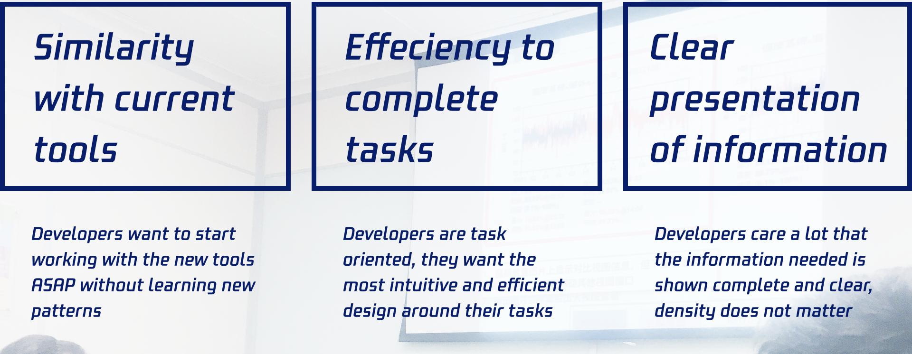
From the research done above, and quick alignments within teams, we reframed the problem to be: Provide a platform that’s easy for most DevOps developers and their managers to transport from current tools, and finish their work efficiently.
Synthesizing information from both stakeholders and users, we discussed and decided the following design principles to guide our design.
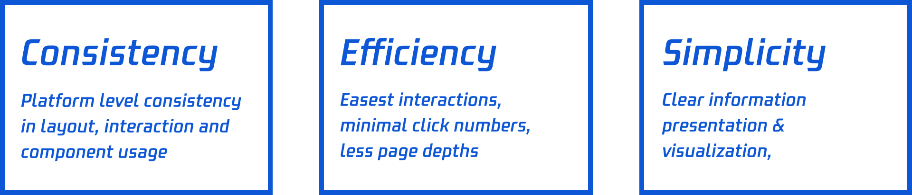
These general research helped build up our understanding and emphathy for our users, we also identified what flows design team will be working on. Here are some flows I was individually responsible for and I would share 2 flows to showcase how I used interaction details, visual elemnets to help usres accomplish their tasks
I will share 2 cases in this huge system that I individualy worked on and shipped.
I first reviewed PRD with PMs and achieved an agreement on the target users, scenarios, tasks and their flows.
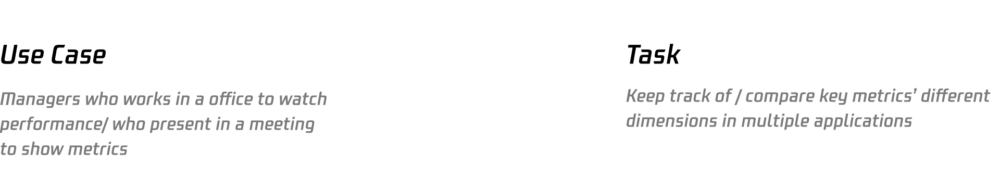
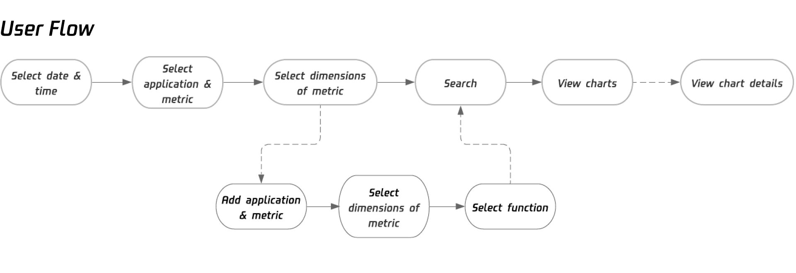
Then I analyzed the relationship of the components in the interface, trying to generate a layout that best suits the above user requirements.
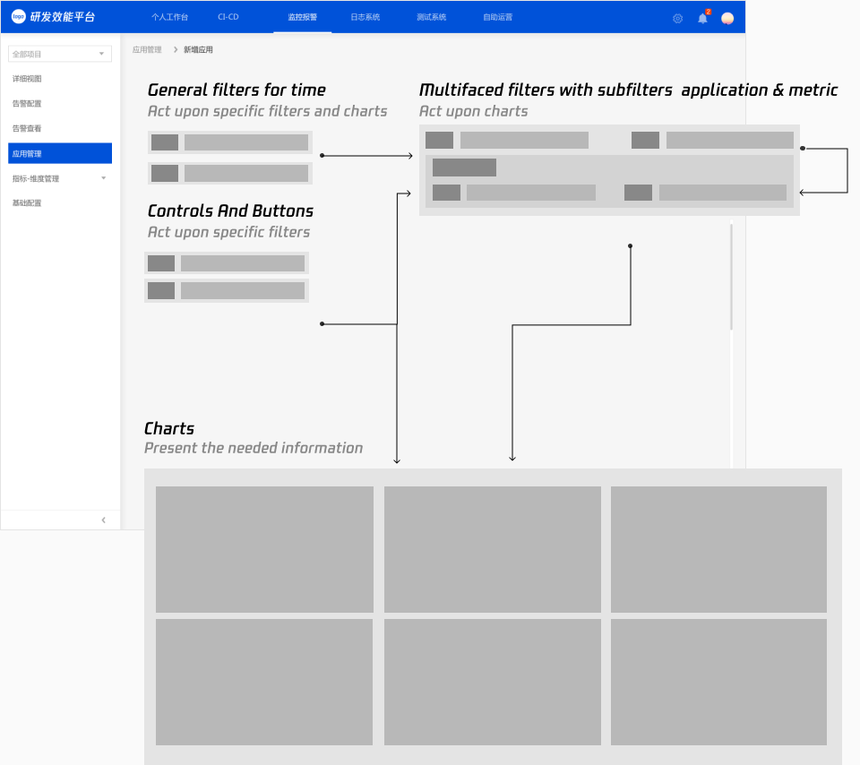
And I worked on refining the details of the specific filter component and the chart component, and shipped respective designs.
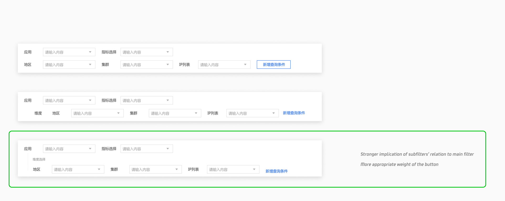
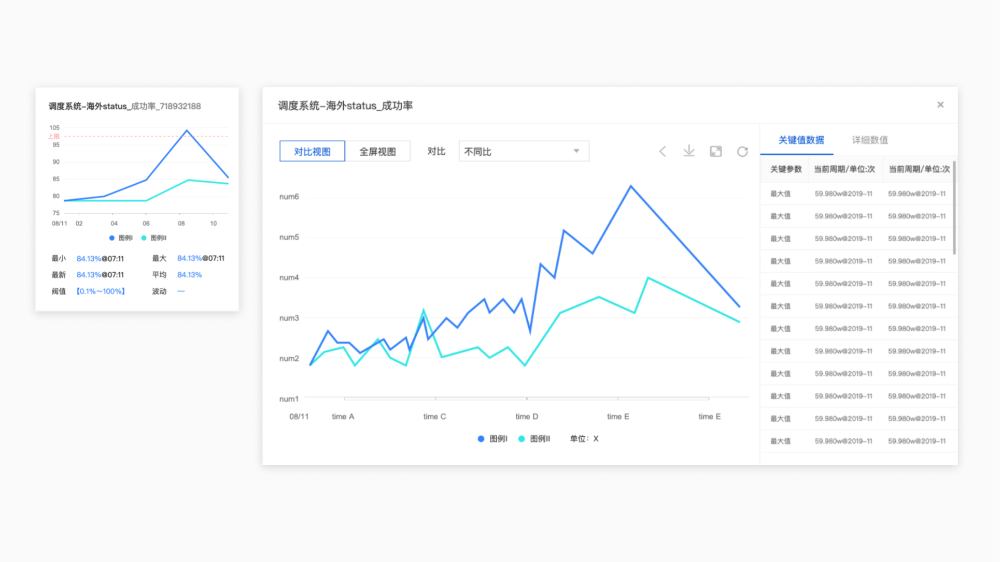
I shipped the design with interaction brief to developers and then went through the prototypes they built to ensure the quality of the design implementation. After the prototype is correct, we release it to developers for unmoderated user testings and collected their feedback with spreadsheets. Key iterations we made after getting the feedback are as followed.
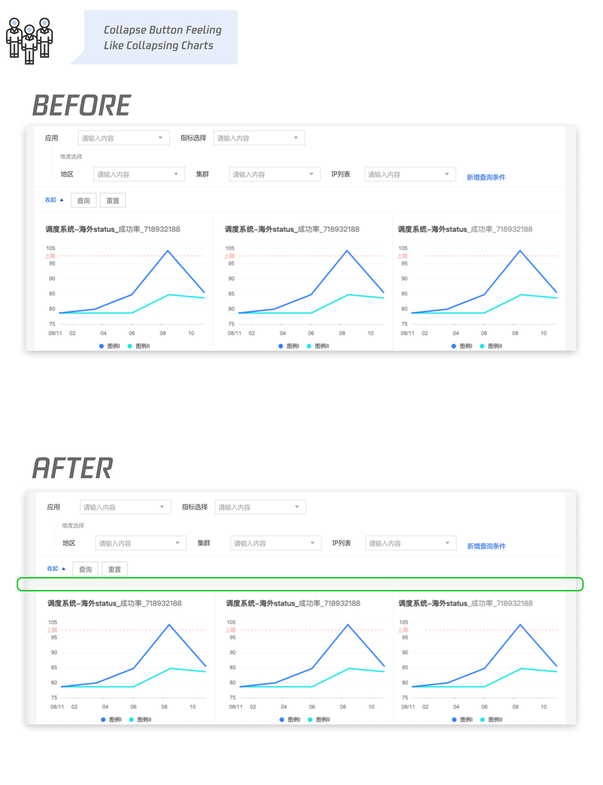
Final designs of this workflow is as followed
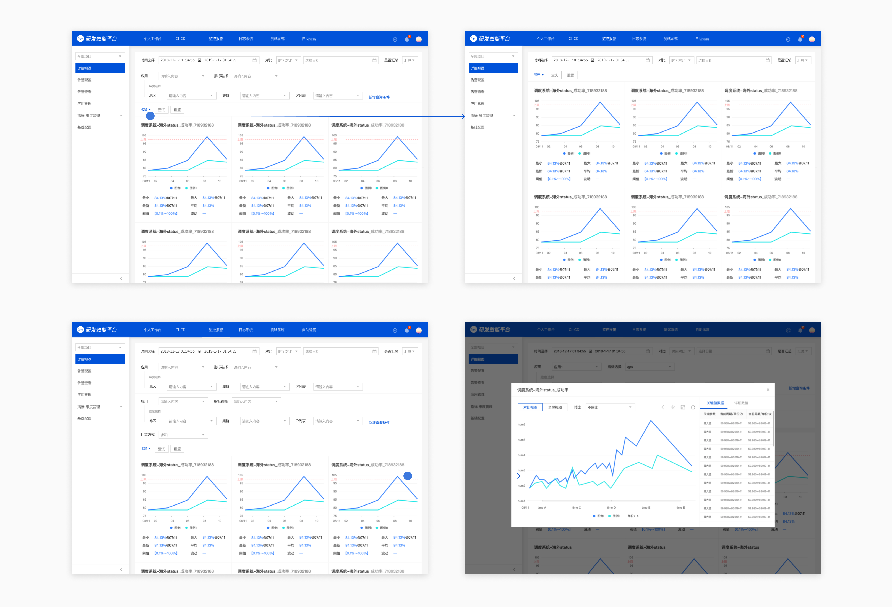
In other flows I am responsible for, I found myself designing for a frequently repeating task: adding new items to a form. After talking with my team, we decided that as the interaction is quite universal in this DevOps product, we should add this interaction to Tencent’s backend design system.
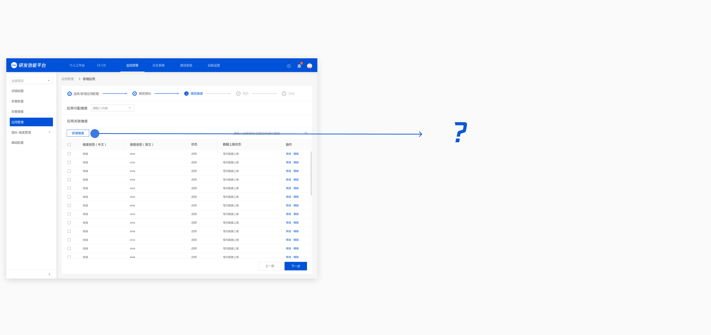
Now, the considerations of this interaction have multiple layers: how it best suits the needs of specific use cases? how it will scale up to other use cases.
I developed 3 alternatives, after several internal critiques, we went forward with the third alternative.
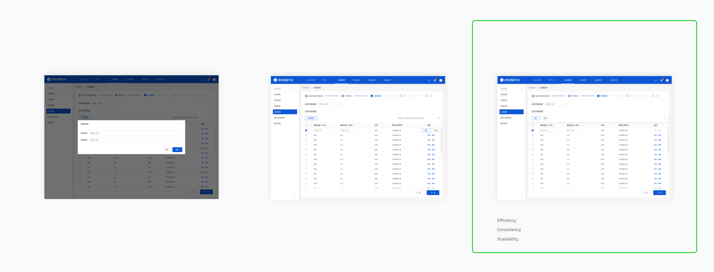
Then I created the UI components “Adding new item to a form” to Tencent’s backend design system called Ten
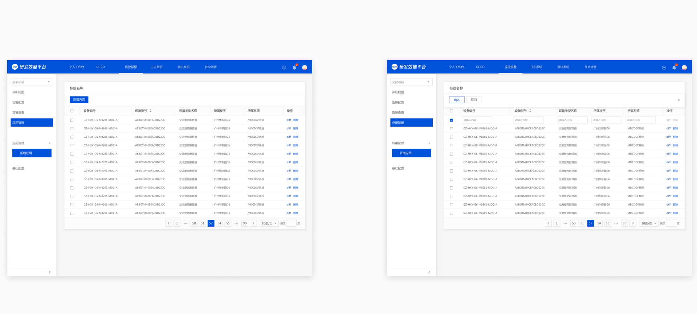
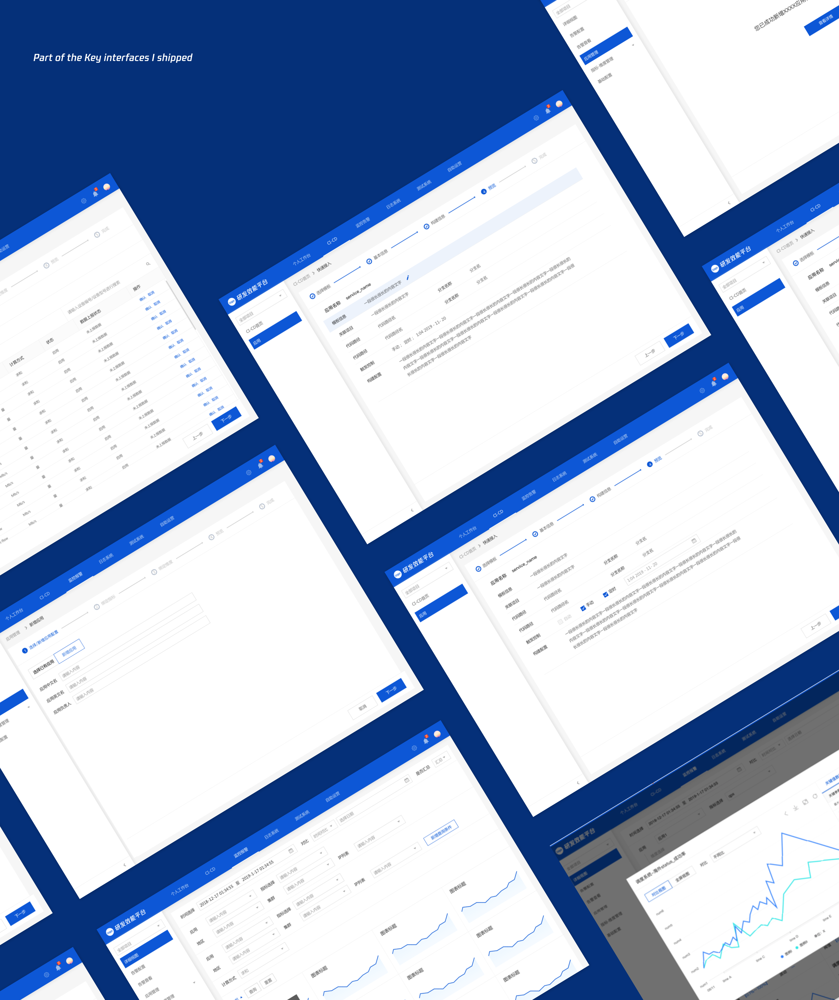
This project taught me to follow an existing design system while keep an open mind and make necessary updates to it. That's how an organization could maintain consistency from junior to senior designers while function in the most efficient ways.
Delivering design to developers does not necessarily mean a working prototype. There are multiple ways to deliver a project, considering existing resources and context.
My design manager showed me how to decide and socialize the scope and methodology that the team will carry on through the project. Which made me realize designing in industry setting means shipping within limited resources and time, but unlimited responsibility and flexibility